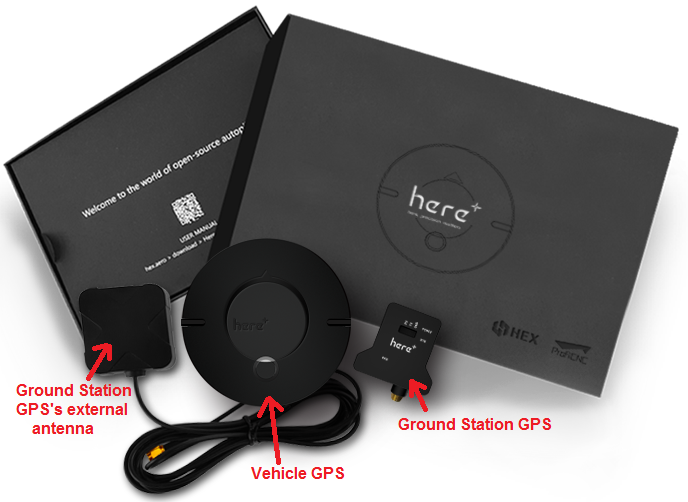
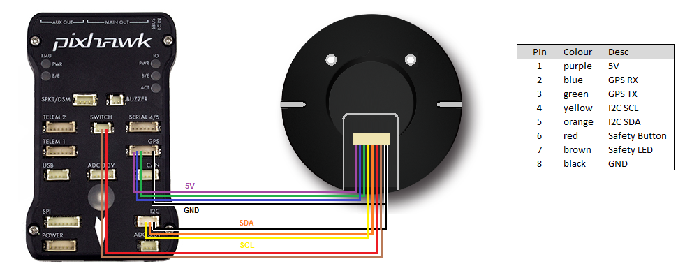
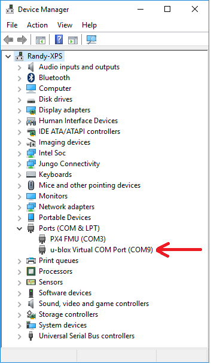

Here+ RTK GPS¶
This article provides a brief overview of how to setup a Here+ RTK GPS receiver which is based on the Ublox M8P. Like other RTK GPSs, the Here+ can provide much more accurate position estimates than regular GPSs but normally requires the use of a 2nd GPS connected to the ground station. These instructions focus on the setup using Mission Planner on Windows, but HERE+ is also supported by QGroundControl.
{kind=link}
Where to buy¶
See a list of Proficnc resellers here or you can purchase directly from Proficnc.com.
Connecting the vehicle and base station GPSs¶
The Here+ GPS kit comes with a larger round GPS (also knows as the “Rover”) that should be mounted on the vehicle so that the round button is on the top and the faint arrow is pointing forwards.
This GPS is connected to the autopilot using the supplied 8-pin clickmate connector (if using a Cube) or an optional 4pin+6pin DF13 connector (if using Pixhawk).
A smaller GPS (also known as the “base station”) labelled “here+” is also included along with its external antenna. This GPS is connected to the ground station PC using the supplied USB cable.
Below is a diagram showing how to connect the Here+ to a Pixhawk.
{kind=link}
Installing the Drivers¶
Windows 10 users (and perhaps others) will need to download and install the u-blox GNSS Standard Driver for Windows, v1.2.0.8.
If this link is broken you may find a newer version is available under the “Driver” section of this ublox page.
When first installed, the device may show up in the “sensors” category in device manager. If this happens, please right click on it and “update driver” select “Browse my computer for driver software” then select “Let me pick from a list of devices” the next screen will show a list of possible drivers. Select.. “USB Serial Device” Select next and finish.
If installed correctly, when plugged in, the GPS should appear in the Device Manager as “USB Serial Device”.
{kind=link}
Upgrading to U-blox 1.30 Firmware¶
The default firmware version of the HERE + modules is ublox-1.10 firmware. The new version of 1.30 firmware includes new feature of fusing other satellite systems (Glonass / beidou) with GPS for RTK operations, effectively increasing the RTK positioning accuracy. Therefore, it is recommended that all users upgrade to 1.30 firmware before using HERE+.
During the preparation of this guide, ublox-1.40 version of the firmware has also been released. 1.40 version firmware introduced a new feature called the mobile base station, that is, the base station need not be fixed in a location. For example, a base station may be placed on a moving vehicle or boat. Upgrading to Ublox-1.40 version is similar to upgrading to 1.30. For users who do not need to use the mobile baseline feature, upgrading to version 1.30 is sufficient.
Downloading U-centre UI and 1.30 Firmware¶
Upgrading firmware requires the use of Ublox’s Windows software U-center. To download U-center, please go to the official website. Then follow the prompts to install U-cent software. During the installation process, you will be prompted to install the device Driver, please ensure that only the Standard Driver For Windows is checked, as shown below.

You will also need to download firmware here. Click the choice: u-blox M8 Flash Firmware 3.01 HPG 1.30 - ONLY for High Precision GNSS products.
Connect your HERE+ Base and Rover to Computer¶
When upgrading the base station module, use the USB cable to connect the base station module to the computer USB interface, as shown in the following figure:

When upgrading a Rover module, use a hexagonal screwdriver to open the case. The rover module has a USB interface connector identical to the base module, you can use the base module USB cable to connect rover to computer. In addition, during the firmware upgrading process, the rover module needs to be powered by connecting to autopilot, as shown in the following figure:

Upgrading Process¶
Open the U-center software, click the connection button (as shown in the red circle), select the com port that corresponds to your base/ rover module.

Click tools->u-blox 5 – 8 Flash Firmware Update, and click the settings as shown below:

In Firmware image, unzip and select the downloaded 1.30 Firmware. For base module, chose the firmware with title: UBX_M8_301_HPG_130_REFERENCE_NEOM8P2.59a07babb501ba6a89ff87cac2f 2765f.bin For rover module, choose the firmware: UBX_M8_301_HPG_130_ROVER_NEOM8P0.3ee86a9e4775e3335e742b53527fa5 d0.bin

In Flash Information Structure(FIS) File, select Flash.xml，which is located in the installation address of U-centre software.

Click OK and wait for the firmware uploading to complete. Uploading usually takes only a minute or less. If the uploading is successful, the upgrade interface is displayed in green; if the upgrade is aborted, the interface is displayed in red. If the process is interrupted, or if it is not responding for a long time, the modules will need to be power cycled and uploading needs to be done again.
Check current Rover/Base firmware version¶
When base/rover is already connected to U-center, click View, go to Message View -> UBX -> MON _> VER, you will see the interface below:

As shown in the figure, the current firmware version is FWVER = HPG 1.30 REF, indicating that the current firmware version is 1.30 for base module.
Basic operating manual¶
This part of the tutorial uses Mission Planner ground control software and ArduCopter-3.5 flight control firmware for operating instructions.
Preparation before operation.¶
To use HERE+ on a UAV, you need the following hardware:

Before using, make sure the hardware is connected correctly: The base station module is connected to the computer port through USB; a telemetry module is connected to another USB port of the same computer. For UAV, HERE + rover module is connected to the autopilot GPS connector, telemetry module is connected to the TELEM interface.

Place vehicle and base stations so that their GPS antennas have a clear view of the sky (i.e. this will not work indoors!).
During operation, please place the base station in an outdoor environment with sufficient sky coverage to obtain a good satellite signal. Place the base station on a stable and elevated platform, such as a tripod.

Connect to the vehicle’s autopilot (i.e. Pixhawk, Cube, etc) using Mission Planner
Open the Initial Setup >> Optional Hardware >> RTK GPS Inject screen
For first time setup in a new location, click the Enter Base Position button, make sure the dialog box shows empty location information, as shown below:
{kind=link}
Base module setting using Mission Planner¶
Start with base module setup first. During the base station setup, the rover and the UAV do not need to be turned on. Open the Mission Planner ground station software on your computer and go to the initial setup -> Optional Hardware -> RTK / GPS Inject page. You will see the following page:

Select the correct base module com port in the top left corner and click connect. In the SurveyIn Acc section, enter the absolute geographic accuracy that you expect your HERE + base station to achieve. In the Time column, enter the minimum survey time you expect. Click on Restart, the ground station will transfer the data you have entered to the HERE + base module, the base module will start a new round of surveying. You will see the following page:

During the survey process, the right box will show the current survey status: Position is invalid: base station has not yet reached a valid location; In Progress: survey is still in progress; Duration: The number of seconds that the current surveying task has been executed; Observation: the number of observations acquired; Current Acc: Absolute geographic accuracy that the current base station can achieve. The green bar at the lower part of the Mission Planner page shows the satellites being detected and the signal strength related to each satellite.
The base station needs a certain amount of time to meet the accuracy requirements of your input. Testing shows that, in an open area without shelter, to achieve the absolute accuracy of 2m takes a few minutes; to reach the absolute accuracy of less than 30cm takes around an hour; to reach the accuracy of 10cm takes a few hours.
Note
These duration could vary greatly by various factors. For example, to achieve the absolute accuracy of 2m could take an hour.
It should be noted that the absolute geographic accuracy of the base station here will affect the absolute geographic accuracy of the rover module without affecting the relative accuracy between the base station and rover. If your application does not require UAV with high absolute geographic accuracy, you do not need to set the base station’s precision too high, resulting in long survey time. Even if the accuracy of the base station is 1.5 to 2 m, the position accuracy of the rover module relative to the base station can still reach centimeter level.
After the survey is complete, Mission Planner will display the following page:

In the RTCM box is shows that the base status indicator is green and both the GPS and Glonass satellite systems are green (if you want to change the satellite system, refer to the following section). The box on the right says Position is valid.
To store the current location in the Mission Planner: Click Save Current Pos, enter a name in the dialog box, and click OK. As shown below, you can see your saved location in the list. Click the Use button for the location you saved. The base station will enter the fixed mode and the status will show Using FixedLLA. In the future, if you set the base station in the same location, you do not need to conduct survey again, just click the Use button that corresponds to the location you have saved.

Rover Module and Autopilot Setup¶
After the base station is set up, you can turn on the UAV. Using the same Mission Planner to connect the telemetry module, the base station data will be transmitted through telemetry module to the HERE + rover module on the UAV. In the Mission Planner main page, you can see the current GPS status displayed as RTK Float / RTK Fixed / 3D RTK, indicating that the positioning of the UAV has entered the RTK mode. RTK Float is a floating-point solution; RTK Fixed is a fixed solution. RTK Fixed mode has a higher accuracy and requires better signal strength. 3D RTK is unified saying of RTK Float / RTK in the Mission Planner Chinese version.

In the SurveyIn Acc input box, key in the absolute accuracy of base station you wish to achieve, in the unit of meters (for example, 0.50 means 50cm accuracy). In the Time(s) input box, key in a reference time in seconds. Depending on your desired accuracy, the base station may take more than your input time to achieve the desired accuracy.
{kind=link}
Select the COM port for the base station and press Connect (the baud rate drop-down normally does not need to be set because it is automatically detected)
“M8P autoconfig” should be checked
{kind=link}
The satellite information will be visualized as green bars as shown in the screen shot below.
{kind=link}
A line of text will indicate the current status of the surveying: SurveyIn indicates whether the survey has achieved the desired accuracy of base station, it will show ‘true’ when the survey has been completed.
InProgress shows whether the survey is still ongoing. A completed survey of the current base position is indicated by the status messages SurveyIn Valid: True, and InProgress: false.
Duration: the duration of the survey in seconds
Obs: number of observations used for the survey
Acc: current accuracy in meters
When the survey is completed as indicated by the SurveyIn: True message, you may click the ‘Save current pos’ button and enter a name for the saved position.
The RTK messages from base station is sent to vehicle by MAVLink message. In the main HUD of Mission Planer, the GPS status should display RTK Fix or RTK Float
{kind=link}
The information of the saved position will be displayed in the table as shown in the screen shot below.
{kind=link}
The saved position can be used the next time you set up the base station in the exact same location. However, if you change to another location for surveying, please ensure you clear the position information in the dialogue box that pops up when you click ‘Enter Base Position’. Otherwise, the previously saved point will be taken every time you connect to the base module.
Use U-centre for live data recording/replaying¶
One function of the U-center is to record the base / rover module data for later analysis. Firstly, when the base or rover module is already connected to U-center (in the same way it is connected when updating firmware), click the following bug icon to turn on the debug message:
Then, click into View -> message view -> UBX -> RXM -> RTCM (RTCM input status), right click to enable message.

Finally, click on the red recording icon on the upper left corner of the interface (shown below), select an address to save the recording, click OK, the recording will begin. When recording is stopped, the recording will appear in the previously saved address.
To play the recorded data, click the green play icon, select a playback speed, select the specified address of your stored data file, then the data will be played.
Use U-Centre for debugging/advanced configuration¶
-Check Status of Base Station. Connect the base module to U-center software, check the display box in the upper right corner of the interface, Fix Mode section is displayed as TIME. If Fix Mode does not enter TIME, the current state of the base station is not sufficient to allow the rover module to enter RTK mode. As shown in the figure below, Fix Mode is displayed in 3D mode, hence the RTK standard has not yet been reached.

The possible reasons for Base station not entering TIME Mode: Firstly, the signal received by base station is not strong enough. To check the satellite strength received by base station, see the bottom right corner of the software interface. The vertical bars in the box indicate satellites strength received by the current base station. A vertical bar represents a satellite (GPS or Beidou / GLONASS, depending on the choice of satellite systems). TIME Mode of base station requires: 5 GPS satellite signals +2 GLONASS satellite signals in the strength of 40 or more; or 5 GPS satellite signals +3 Beidou satellite signal in the strength of 40 or more. As shown in the figure below, only one satellite strength is higher than 40, the signal condition does not meet the RTK standard.

Secondly, the user input of survey-in accuracy requirement is too strict to achieve, or the base station has not yet completed the surveying process. Using U-centre for survey-in setup, please refer to section c) in this chapter.
-Check whether Rover receives base correction data(Timeout). After the base station enters the TIME Mode, it is necessary to transmit the RTCM data to the rover, for rover to enter RTK modes. Therefore, a real-time and efficient communication between rover and base station is necessary for good RTK positioning performance.
Check whether there is a delay in the data transmission between the mobile station and the base station, connect the rover module to U-center (or replay the data log to inspect a previous operation). Go to Messages view -> NMEA -> GxGGA directory to see Age of DGNSS Corr parameters. This parameter represents the time at which the rover did not receive the base station data. In the case of the default base station message frequency 1HZ, if this parameter exceeds 1s, there is a certain delay in the data transmission.
-Set Survey-in/Fixed mode for base station. Similar to Mission Planner RTK Inject page, U-center can also be used to set the base station survey-in time and accuracy. Enter the Messages view option, UBX’s CGF menu, enter the TMODE3 tab. Select 1.Survey-in under the Mode drop-down option, and set the survey time (and the minimum time required for the base station to survey). The survey-in current status can be viewed in the NAV-> SVIN page in Message View.

The base station can also be set to Fixed Mode. When the base station’s current precise geographic coordinates are known, the coordinates can be entered directly into the base station, which saves the time required for surveying. In the TMODE3 page, select Fixed mode in the drop-down list, and then enter the precise known base station coordinates.
After setting the survey or fixed mode, click the Send button at the bottom left of the page to transfer the modified data to the base station.
-Use Beidou/GLonass. The uBlox 1.30 firmware uses the GPS + GLONASS navigation system for location services by default. If you want to change to GPS + Beidou navigation system, you need to enter the Messages view -> UBX -> CGF -> GNSS directory, cancel the tick on GLONASS Enable option, and then check the Beidou Enable option. After the selection, click send to complete the change.

To save the current settings, go to the Messages view -> UBX -> CFG (Configuration) page and click the Save current configuration option, then click Send (as shown below).

Note
Base station and rover should use the same navigation system configuration, or rover will not be able to enter RTK modes.
-Base module I/O port and protocol setup. UBlox M8P chip supports a variety of input and output protocols, including USB, UART, I2C and so on. The HERE + base station module uses the USB port for data communication and RTK outputs. If you need to confirm the current settings, go to the Messages view -> UBX -> CFG -> PRT directory and select 3-USB in the Target field. The correct input and output protocols are shown below:

If you want to use more output protocols (such as UART), you can also select the output protocol and a specific message combination on this page. If you want to set a string of specific messages to output under a variety of protocols, you can go to the Messages view -> UBX -> CGF -> MSG directory, select a specific message, and then check the type of protocol you want to output.
To save the current settings, go to the Messages view -> UBX -> CFG (Configuration) page and click the Save current configuration option, then click Send.
-Change Rover module output rate. By default, the output frequency of the position information by the rover module is 1HZ. If you need to speed up the position output frequency, you can enter the Messages view -> UBX -> CGF -> RATE directory, change the Measurement Period. For example, the measurement period is changed to 200 ms and the measurement frequency will be increased to 5 Hz.

To save the current settings, go to the Messages view -> UBX -> CFG (Configuration) page and click the Save current configuration option, then click Send.
Change Base Antenna and Testing¶
HERE + base module antenna is a Taoglass antenna. Users can select different antennas according to their needs and connect them to base module. We have conducted a test of three different antennas in an outdoor environment, where three antennas at the same time, same location were connected to the HERE + base station, data were logged using Ucentre recording function. It should be noted that the following data are not sufficient to give a comprehensive conclusion about which antenna is better, but the user can use the following methods to test, compare different antennas to find he one more suitable for their application.
Test Antenna A：

Test Antenna B：

Original Antenna:

Base status with Antenna A at TIME Mode:

Base status with Antenna B at TIME Mode:

Base status with original antenna at TIME Mode:

Satellite signal comparison for each satellite:

Number of satellites reception above 40 with antenna A: 12 satellites

Number of satellites reception above 40 with antenna B: 13 satellites

Number of satellites reception above 40 with original antenna: 14 satellites